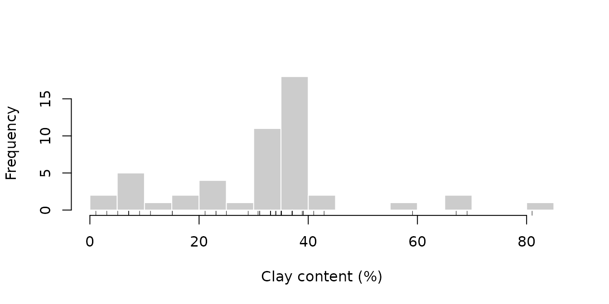
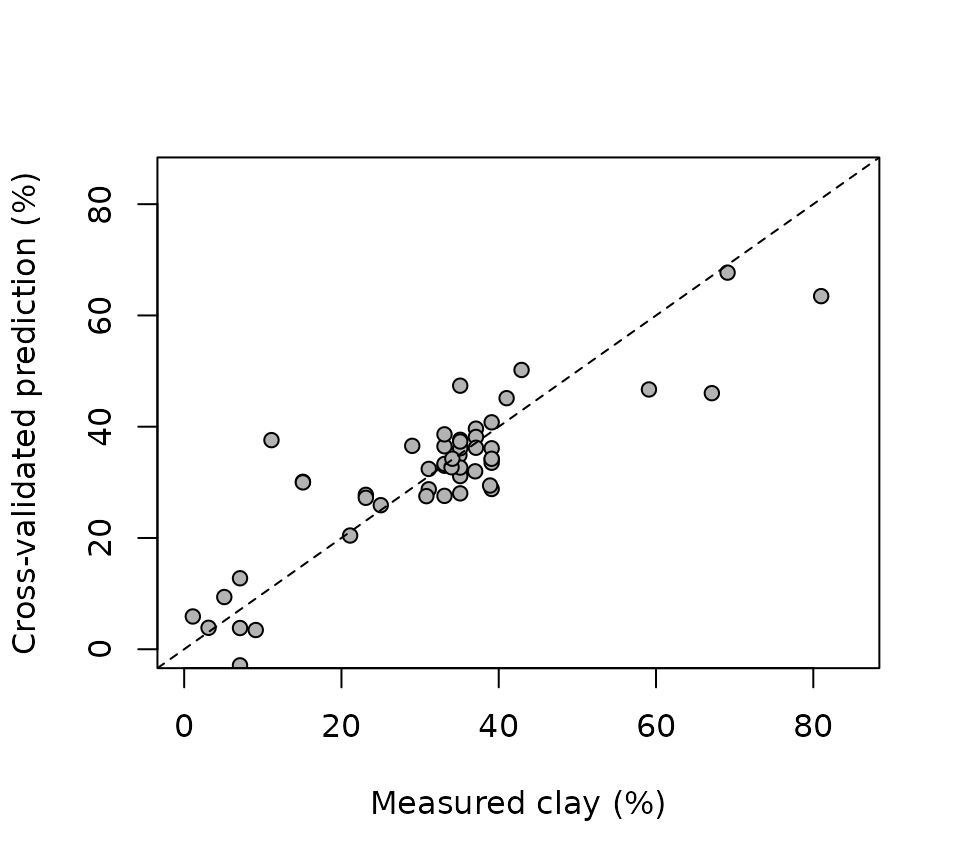

Preprocessing is only useful if it improves the analysis it serves.
This vignette uses a concrete goal to evaluate preprocessing choices:
predicting the clay content of the 50 soil samples in
specLIBS with partial least squares (PLS) regression.
The main difficulty is statistical, not spectroscopic. With 50 samples and 7152 variables, a model can fit the calibration data almost perfectly, so everything depends on estimating prediction error honestly. Several common shortcuts bias that estimate downward. The vignette quantifies two of them.
The target
clay <- tapply(meta$Clay, meta$Sample, unique)
summary(clay)
#> Min. 1st Qu. Median Mean 3rd Qu. Max.
#> 1.10 23.57 34.55 31.83 38.45 81.00
hist(clay, breaks = 15, col = "grey80", border = "white", main = NULL,
xlab = "Clay content (%)")
rug(clay)
The distribution is left-skewed. Most samples contain 20 to 45% clay, while a handful of samples lie well above 55%. These few samples have high leverage: the model’s behaviour at high clay content rests on very little data, and any error summary is sensitive to how they fall in the cross-validation folds.
Preprocessing without leakage
Preprocessing steps fall into two groups:
-
Steps computed from each spectrum alone
(
baseline_arpls(),snv(),normalize()): they use no information from other samples, so they can be applied once to the whole data set. - Steps estimated from a set of samples (the MSC reference spectrum, EPO and GLSW filters, the OSC family, centering and scaling): they must be estimated on the calibration part of each cross-validation split only, and then applied to the held-out part.
We apply the per-spectrum steps now, and average the 8 shots of each sample:
Xb <- as.matrix(baseline_arpls(X, lambda = 1e5, max.iter = 20)$correction)
Xsnv <- as.matrix(snv(Xb)$correction)
sample_mean <- function(M) {
a <- average(cbind(Sample = meta$Sample, as.data.frame(M)), Sample)
out <- as.matrix(a[-1])
rownames(out) <- a$Sample
out
}
raw_s <- sample_mean(X)
base_s <- sample_mean(Xb)
snv_s <- sample_mean(Xsnv)
y <- clay[rownames(snv_s)]Validation design
We use repeated 5-fold cross-validation with the sample as the unit. Each sample is one row after averaging, so all 8 shots of a sample are always on the same side of a split. Within each calibration set, the number of PLS components is chosen by an inner cross-validation (up to 10 components). The outer folds therefore never influence this choice: this is nested cross-validation. The whole procedure is repeated 5 times with different fold assignments, to show how much the error estimate itself varies.
fit_predict <- function(Xtr, ytr, Xte, ncomp = NULL, max_comp = 10) {
if (is.null(ncomp)) {
inner <- pls::plsr(ytr ~ Xtr, ncomp = max_comp, validation = "CV", segments = 5)
ncomp <- which.min(inner$validation$PRESS[1, ])
}
model <- pls::plsr(ytr ~ Xtr, ncomp = ncomp)
list(pred = drop(predict(model, newdata = Xte, ncomp = ncomp)), ncomp = ncomp)
}
# Repeated K-fold CV. `pipeline(train, test)` returns the preprocessed
# calibration and validation matrices and, optionally, a fixed ncomp.
cross_validate <- function(pipeline, repeats = 5, K = 5, seed = 2024) {
set.seed(seed)
n <- length(y)
preds <- matrix(NA_real_, n, repeats)
ncomps <- integer(0)
for (r in seq_len(repeats)) {
folds <- sample(rep(seq_len(K), length.out = n))
for (k in seq_len(K)) {
test <- which(folds == k)
train <- which(folds != k)
d <- pipeline(train, test)
f <- fit_predict(d$train, y[train], d$test, ncomp = d$ncomp)
preds[test, r] <- f$pred
ncomps <- c(ncomps, f$ncomp)
}
}
rmse <- apply(preds, 2, function(p) sqrt(mean((p - y)^2)))
r2 <- apply(preds, 2, function(p) 1 - sum((p - y)^2) / sum((y - mean(y))^2))
list(preds = preds, rmse = rmse, r2 = r2, ncomp = stats::median(ncomps))
}Comparing preprocessing pipelines
We compare six pipelines. The same seed gives every pipeline the same fold assignments, so the comparisons are paired:
pipelines <- list(
`raw counts` = function(tr, te) list(train = raw_s[tr, ], test = raw_s[te, ]),
`baseline` = function(tr, te) list(train = base_s[tr, ], test = base_s[te, ]),
`baseline + SNV` = function(tr, te) list(train = snv_s[tr, ], test = snv_s[te, ]),
# MSC: the reference spectrum is estimated on the calibration samples only
`baseline + MSC` = function(tr, te) {
cal <- msc(base_s[tr, ])
val <- msc(base_s[te, ], xref = cal$reference)
list(train = as.matrix(cal$correction), test = as.matrix(val$correction))
},
# EPO: clutter = shot-to-shot deviations of the calibration samples only
`SNV + EPO` = function(tr, te) {
shots <- meta$Sample %in% rownames(snv_s)[tr]
S <- Xsnv[shots, ]
clutter <- S - apply(S, 2, function(v) ave(v, meta$Sample[shots]))
filtered <- as.matrix(epo(snv_s, ncomp = 3, clutter = clutter)$correction)
list(train = filtered[tr, ], test = filtered[te, ])
},
# OPLS filter (projected OSC) fitted on the calibration samples only,
# followed by a one-component PLS model
`SNV + OPLS filter` = function(tr, te) {
f <- projected_osc(snv_s[tr, ], y[tr], ncomp = 4, newdata = snv_s[te, ])
list(train = as.matrix(f$correction), test = as.matrix(f$newdata$correction), ncomp = 1)
}
)
results <- lapply(pipelines, cross_validate)
null_rmse <- sqrt(mean((y - mean(y))^2))
summary_table <- data.frame(
pipeline = names(results),
RMSE = sapply(results, function(r) mean(r$rmse)),
RMSE_sd = sapply(results, function(r) sd(r$rmse)),
R2 = sapply(results, function(r) mean(r$r2)),
ncomp = sapply(results, function(r) r$ncomp), # median number of PLS components
row.names = NULL
)
summary_table[2:4] <- round(summary_table[2:4], 2)
summary_table
#> pipeline RMSE RMSE_sd R2 ncomp
#> 1 raw counts 7.98 0.90 0.75 7
#> 2 baseline 8.22 0.63 0.73 7
#> 3 baseline + SNV 8.25 0.39 0.73 7
#> 4 baseline + MSC 8.08 0.17 0.74 7
#> 5 SNV + EPO 8.00 0.50 0.75 5
#> 6 SNV + OPLS filter 8.13 0.27 0.74 1
c(null_model_RMSE = round(null_rmse, 2))
#> null_model_RMSE
#> 15.96RMSE and R2 are averages over the 5
repeats, and RMSE_sd is the standard deviation of the RMSE
across repeats. All pipelines predict clay content far better than the
null model, which predicts the mean for every sample (RMSE 16%). With an
RMSE of about 8% and a cross-validated R² of about 0.7, the spectra
explain most of the variation in clay content.
Are the pipelines different from each other? The fold assignments are shared, so we compare each pipeline with the baseline-only pipeline repeat by repeat:
reference <- results$baseline$rmse
paired <- t(sapply(results, function(r) {
d <- r$rmse - reference
c(mean_difference = mean(d), min = min(d), max = max(d))
}))
round(paired, 2)
#> mean_difference min max
#> raw counts -0.24 -0.76 0.26
#> baseline 0.00 0.00 0.00
#> baseline + SNV 0.03 -0.98 0.60
#> baseline + MSC -0.14 -1.25 0.43
#> SNV + EPO -0.22 -0.78 0.43
#> SNV + OPLS filter -0.09 -1.37 0.73Every pipeline differs from the baseline-only pipeline by less than 0.25 points of RMSE on average, and for every pipeline the sign of the difference changes from one repeat to another. With 50 samples, these data cannot distinguish the pipelines reliably. This matches the finding of the preprocessing vignette: SNV improves the repeatability of the spectra, but removes between-sample variation too, and the two effects roughly cancel for clay prediction.
The honest conclusion is that preprocessing choice matters little here. A claim that one pipeline is better would need more samples, or an independent validation set.
How much optimism do common shortcuts add?
Shortcut 1: splitting replicates across folds
If the 400 shots are cross-validated as if they were independent, shots of the same sample end up in both the calibration and the validation folds. The model is then partly validated on the samples it was trained on:
set.seed(2024)
y_shot <- meta$Clay
shot_folds <- sample(rep(1:5, length.out = nrow(Xsnv)))
pred_shot <- numeric(nrow(Xsnv))
for (k in 1:5) {
test <- shot_folds == k
pred_shot[test] <- fit_predict(Xsnv[!test, ], y_shot[!test], Xsnv[test, ])$pred
}
shot_rmse <- sqrt(mean((pred_shot - y_shot)^2))
c(shot_level_CV = round(shot_rmse, 2),
sample_level_CV = round(mean(results$`baseline + SNV`$rmse), 2))
#> shot_level_CV sample_level_CV
#> 7.67 8.25Shot-level cross-validation reports an RMSE about 7% lower than the sample-level estimate. The optimism is moderate here, because the shots of a sample differ appreciably. It grows as replicates become more alike, and it can be large for homogeneous materials.
Shortcut 2: fitting a supervised filter before cross-validating
The OPLS filter uses the response y to decide what to
remove. If it is fitted once on all 50 samples and cross-validation is
run afterwards, the validation samples have already influenced the
filter:
filtered_all <- as.matrix(projected_osc(snv_s, y, ncomp = 4)$correction)
leaky <- cross_validate(function(tr, te) {
list(train = filtered_all[tr, ], test = filtered_all[te, ], ncomp = 1)
})
c(filter_before_CV = round(mean(leaky$rmse), 2),
filter_inside_CV = round(mean(results$`SNV + OPLS filter`$rmse), 2))
#> filter_before_CV filter_inside_CV
#> 5.01 8.13Fitting the filter before cross-validation gives an RMSE 38% lower
than the honest estimate, a far larger effect than any difference
between the pipelines above. The same bias affects osc(),
direct_osc(), direct_orthogonal(),
nas() and o2pls(), and any variable selection
that uses the response. Refit these steps inside every fold, including
the inner loop that chooses the number of components.
Looking at the predictions
The out-of-fold predictions, averaged over the 5 repeats, show where the model succeeds and where it fails:
pred <- rowMeans(results$`baseline + SNV`$preds)
plot(y, pred, pch = 21, bg = "grey70", xlim = c(0, 85), ylim = c(0, 85),
xlab = "Measured clay (%)", ylab = "Cross-validated prediction (%)")
abline(0, 1, lty = 2)
Three of the four samples above 55% clay are underpredicted, by 12 to 21 points. With so few calibration samples in that range, the model pulls extreme predictions toward the mean, and it should not be used to predict clay contents above about 55% without more calibration data there. At the other end, one sample receives a negative prediction: a linear model does not respect the bounds of a percentage.
Further considerations
- Clay, sand and silt are compositional. They sum to 100% for every sample, so separate models for each fraction will not, in general, predict fractions that sum to 100%. To predict all three, model log-ratios such as \log(\text{clay}/\text{silt}) and \log(\text{sand}/\text{silt}), and transform the predictions back. This also keeps predictions within 0–100%.
-
Cross-validation estimates error for similar
samples. It says nothing about soils from other regions, other
instruments or other measurement sessions. An independent test set
measured later is the stronger evidence, and
pds()orglsw()can help when a model must be transferred between instruments. - Report the variability of the error estimate. A single RMSE from a single cross-validation split hides the spread shown in the table above.